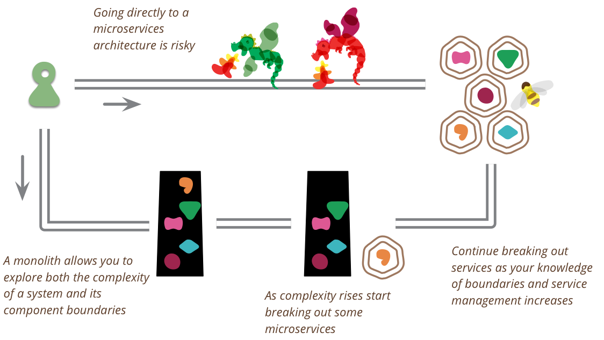

Microservice Prerequisites
Por que a maturidade operacional, a automação e a cultura DevOps são requisitos indispensáveis antes de decompor um sistema em serviços independentes.
O artigo Microservice Prerequisites discute as competências estruturais mínimas que uma organização precisa consolidar antes de aderir à arquitetura de microsserviços. Essa abordagem segmenta uma solução em componentes autônomos e desacoplados, mas transfere a complexidade do código para a infraestrutura de rede, tornando o desenvolvimento e a governança consideravelmente mais desafiadores se a empresa não estiver devidamente preparada.
Martin Fowler enfatiza três capacidades operacionais centrais: a habilidade de provisionar ambientes e servidores rapidamente, um ecossistema de monitoramento contínuo para rastrear anomalias de ponta a ponta e a capacidade de realizar deploys automatizados com alta frequência e baixo atrito. Além disso, a sinergia de colaboração entre desenvolvimento e infraestrutura (cultura DevOps) é vital para responder com agilidade a incidentes distribuídos.
Trade-offs Arquiteturais
Pontos Fortes
Vantagens da Abordagem
-
Escalabilidade Granular
Possibilidade de dimensionar apenas os módulos de maior consumo sem onerar a aplicação inteira.
-
Autonomia Técnica
Equipes podem adotar pilhas tecnológicas específicas e realizar publicações sem depender de um monólito central.
-
Resiliência Parcial
Falhas isoladas em um serviço não provocam a indisponibilidade total do ecossistema.
Desafios
Desafios e Limitações
-
Complexidade Operacional
Gestão de dezenas de pontos de rede, latência entre chamadas e dependências distribuídas.
-
Diagnóstico Difícil
Erros em cadeia exigem ferramentas avançadas de rastreamento distribuído e telemetria centralizada.
-
Consistência Eventual de Dados
Manter a integridade entre bases isoladas requer padrões complexos (como transações distribuídas e eventos).
Diretriz Estratégica do Autor
A Regra de Ouro: Começar Pequeno (MonolithFirst)
O autor recomenda expressamente que as equipes iniciem novos produtos com uma arquitetura monolítica bem desenhada ou com uma quantidade mínima de microsserviços. Isso permite aprender a dinâmica das fronteiras de negócio antes de fragmentar o sistema.
À medida que o domínio amadurece e o tráfego se expande, a automação de CI/CD, os alarmes proativos e a governança operacional são ampliados, garantindo que a equipe controle os serviços em vez de ser soterrada por eles.

Impactos na Gestão do Projeto
Cronograma
Prazo
Exige maior investimento de tempo inicial para estruturar pipelines, testes integrados e orquestração. No longo prazo, acelera o ciclo de lançamento de novas funcionalidades independentes.
Financeiro
Custo
Custos elevados com ferramentas de observabilidade, infraestrutura em nuvem e provisionamento automatizado antes mesmo da primeira funcionalidade rodar em produção.
Equipe
Equipe
Demanda profissionais capacitados em engenharia de confiabilidade (SRE) e DevOps. Reorganiza os times em squads multidisciplinares focadas em serviços específicos.
Governança
Riscos
Adotar microsserviços sem pré-requisitos resulta no temido "monólito distribuído", onde qualquer erro de rede derruba o sistema e os custos operacionais explodem.